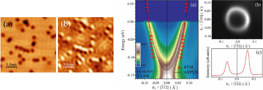

STM と ARPES を用いた強磁性 Ni(111) 表面準位の研究
固体の「次元性」は物性物理を考える上で興味深い要素である。通常、結晶が三次元的に配列している場合、電気伝導を担う自由電子も三次元的に運動する。しかし、二次元物質である薄膜や金属界面などは、電子運動やスピンの自由度が制限される。そのため、電子スピンがある方向に偏極したり、熱伝導や電気伝導に特異な振る舞いが観測される。そのため、薄膜を利用したナノデバイスの最先端機能材料への応用には、低次元金属の電子状態を理解することが重要となる。現在までに、様々な実験手法から貴金属元素 (111) 表面の自由電子的な Shottky 表面状態が観測されている [1,2,3]。近年、強磁性体 Ni (111) 表面に成長させたグラフェン物質において、Ni 原子がグラフェンへスピン偏極した電子を注入する役割を担うとして注目を集めている。また、Ni (111) の表面状態は交換分裂によってスピン分裂し、フェルミ準位近傍領域のスピン分裂したバンド分散について議論が行われてきた [4,5]。

(a) STM 画像 (b) dI/dV 画像 STM 実験から得た E-k 分散とARPES スペクトル
(a) STM 画像 (b) dI/dV 画像 STM 実験から得た E-k 分散とARPES スペクトル
光物性研究室では、広島大学放射光科学研究センター (HiSOR) において研究開発を行ってきた STM / STS 装置と BL-9A の高分解能角度分解光電子分光 (ARPES) 装置を用い、単結晶試料 Ni (111) の表面状態を精密に観測した。その結果、STM / STS と ARPES 両測定において自由電子的な表面状態が観測され、実空間を観測する STM の結果と波数空間に分解する ARPES の結果が良く一致した。さらに、STS 測定によってフェルミ準位には多数スピン状態しか存在しない事を明らかにした。この結果、強磁性体 Ni (111) 表面の電子はスピントロニクスにおいて活躍できる十分な特性があることが確認された。
Y. Nishimura et al., Phys. Rev. B 79, 245402 (2009)
参考文献
[1] F. Reinert et al., Phys. Rev. B 63, 115415 (2001).
[2] M. F. Crommie et al., Nature (London) 363,524 (1993).
[3] A. Schafer et al., Phys. Rev. B 61, 13159 (2000).
[4] F. J. Himpsel et al., Phys. Rev. Lett. 41, 507 (1978).
[5] J. Lobo-Checa et al., Phys. Rev. B 77, 075415 (2008).